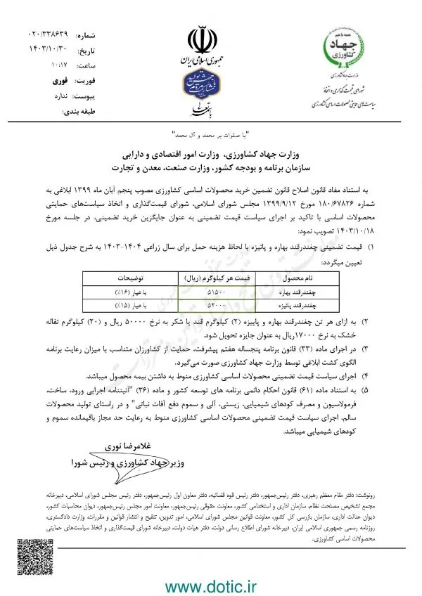

قیمت تضمینی چغندر قند بهاره و پاییزه 1404-1403
وزارت جهاد کشاورزی، وزارت امور اقتصادی و دارایی سازمان برنامه و بودجه کشور، وزارت صنعت، معدن و تجارت
به استناد مفاد قانون اصلاح قانون تضمین خرید محصولات اساسی کشاورزی مصوب پنجم آبان ماه ۱۳۹۹ ابلاغی به شماره ۶۷۸۲۶/۱۸۰ مورخ ۱۲/۹/۱۳۹۹ مجلس شورای اسلامی، شورای قیمتگذاری و اتخاذ سیاستهای حمایتی محصولات اساسی با تاکید بر اجرای سیاست قیمت تضمینیبه عنوان جایگزین خرید تضمینی، در جلسه مورخ ۱۸/۱۰/۱۴۰۳ تصویب نمود:
۱) قیمت تضمینی چغندرقند بهاره و پائیزه با لحاظ هزینه حمل برای سال زراعی ۱۴۰۴-۱۴۰۳ به شرح جدول ذیل تعیین میگردد:
| نام محصول | قیمت هر کیلوگرم(ریال) | توضیحات |
|---|---|---|
| چغندرقند بهاره | ۵۱۵۰۰ | با عیار (۱۶%) |
| چغندرقند پائیزه | ۵۲۰۰۰ | با عیار (۱۵%) |
۲) به ازای هر تن چغندرقند بهاره و پاییزه (۲) کیلوگرم قند یا شکر به نرخ ۵۰۰۰۰ ریال و (۲۰) کیلوگرم تفاله خشک به نرخ ۱۷۰۰۰ریال به عنوان جایزه تحویل شود.
۳) در اجرای ماده (۳۳) قانون برنامه پنجساله هفتم پیشرفت، حمایت از کشاورزان متناسب با میزان رعایت برنامه الگوی کشت ابلاغی توسط وزارت جهاد کشاورزی صورت میگیرد.
۴) اجرای سیاست قیمت تضمینی محصولات اساسی کشاورزی منوط به داشتن بیمه محصول میباشد.
۵) به استناد ماده (۶۱) قانون احکام دائمی برنامه های توسعه کشور و ماده (۳۶) “آئیننامه اجرایی ورود، ساخت، فرمولاسیون و مصرف کودهای شیمیایی، زیستی، آلی و سموم دفع آفات نباتی” و در راستای تولید محصولات سالم، اجرای سیاست قیمت تضمینی محصولات اساسی کشاورزی منوط به رعایت حد مجاز باقیمانده سموم و کودهای شیمیایی میباشد.
